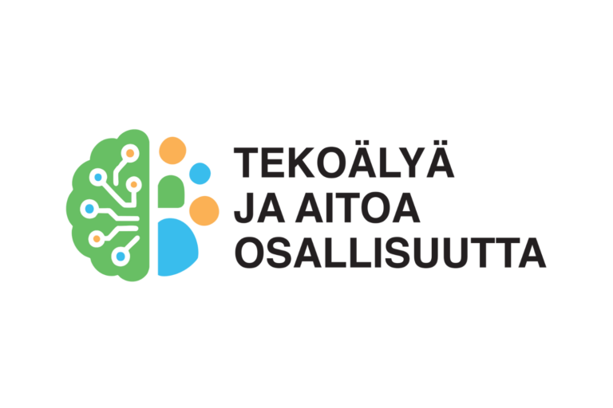
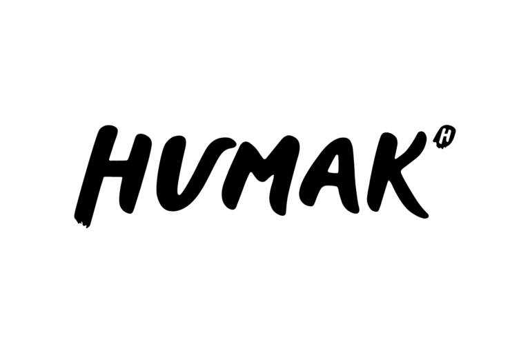
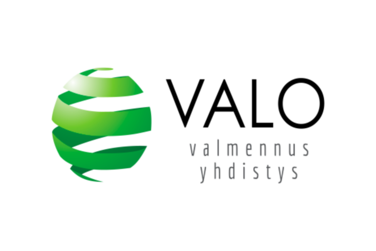
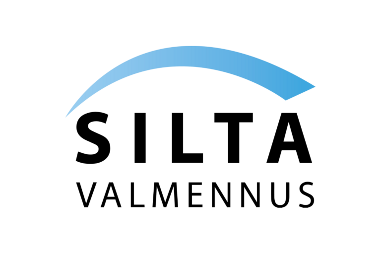
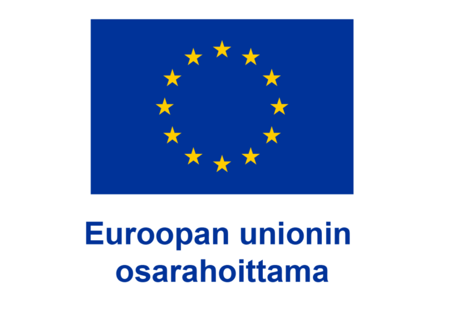

Moduuli 3 / 6
- 1Laiska kokeilu
- 2Uusi keskustelu
- 3Oma prompti A, B tai C
- 4Vertaa
Laiska kokeilu
1 minKlikkaa yllä olevaa tekoälyn nimeä, kopioi alla oleva lyhyt prompti avautuvaan tekstikenttään ja täytä hakasulkeet. Valitse sama tekstityyppi ja aihe, jonka teet vaiheessa 3. Älä anna muuta tietoa. Katso vastaus ja jätä se näkyviin — tarvitset sitä vaiheessa 4.
Avaa uusi keskustelu
½ minTee tämä: klikkaa saman tekoälyn nimeä yllä uudelleen. Uusi, tyhjä keskustelu aukeaa uuteen välilehteen, ja laiska vastaus jää talteen edelliseen. Tee kaikki loput tässä uudessa keskustelussa.
🔥 Suositeltu (5–10 min): opeta tekoälylle oma äänensävynne
Tee tämä, jos löydät 2–3 vanhaa tekstiä nopeasti – silloin tekoäly kirjoittaa teidän äänellänne eikä yleistä järjestökieltä. Jos et löydä, siirry suoraan vaiheeseen 3.
Harvalla järjestöllä on kirjoitettua äänensävyohjetta — mutta vanhoja tekstejä on lähes aina. Liitä 2–3 omaa aiempaa julkaisua ja pyydä tekoälyä kuvaamaan sävynne sanoin. Kopioi saamasi kuvaus vaiheen 3 promptin Sävy-kohtaan.
👉 Nopein tapa: avaa järjestönne Facebook-sivu tai verkkosivu ja kopioi kolme uusinta julkaisua.
Valitse yksi: A, B tai C
10 minValitse se, joka on lähimpänä oikeaa työtäsi tällä hetkellä. Kopioi prompti samaan keskusteluun, täytä hakasulkeet ja lähetä.
Some-julkaisu — kutsu mukaan
Sopii esim. vertaistukiryhmän, teemaillan tai muun tilaisuuden kutsuun.
Uutiskirjeen kappale — jäsenille ja tukijoille
Sopii esim. kuukausikatsaukseen, uuden palvelun esittelyyn tai kiitokseen vapaaehtoisille.
Tiedote — medialle ja sidosryhmille
Sopii esim. uuden hankkeen käynnistymiseen, tapahtuman tuloksiin tai kannanottoon.
Vertaa
3 minLaita vaiheen 1 laiska vastaus ja tämä uusi rinnakkain. Mikä muuttui? Ja tärkein kysymys: mitä sinä tiesit, mitä tekoäly ei tiennyt? Näytä sitten tekstisi kollegalle: mikä toimi, mikä ei, ja mitä muuttaisit ennen kuin lähettäisit sen oikeasti? Sopikaa talossa myös, milloin kerrotte lukijalle tekoälyn käytöstä.
🐱 Valmis ennen muita? Kolme lisähaastetta
1 · Lue teksti kohdelukijan silmin
Jatka samassa keskustelussa. Tekoäly osaa arvioida tekstiä toisen ihmisen näkökulmasta — kunhan kerrot, kuka se ihminen on.
2 · Kuvasta alt-teksti ja julkaisu
Ota puhelimella kuva esimerkiksi tapahtumajulisteesta, ilmoitustaulun lapusta tai tilasta, jossa ryhmänne kokoontuu — ei tunnistettavia ihmisiä. Lisää kuva keskusteluun (+ tai 📎) ja kopioi prompti mukaan. Jokainen someen julkaistu kuva tarvitsee alt-tekstin, jotta ruudunlukijan käyttäjä saa siitä tiedon.
Tarkista kuvaus aina itse — ruudunlukijan käyttäjä ei pysty tarkistamaan, pitääkö se paikkansa.
3 · Sano se ääneen
Paina Geminin mikrofonikuvaketta ja kerro minuutin ajan vapaasti, mitä haluat viestiä ja kenelle — ihan kuin puhuisit kollegalle. Pyydä sitten: "Tee tästä somejulkaisu. Kysy ensin, jos jokin jäi epäselväksi." Huomaat, että puhumalla annat usein enemmän taustaa kuin kirjoittamalla.
Merkitse tehdyksi päivittää yläpalkin edistymisen. Merkintä tallentuu vain tähän selaimeen.
Yhteistyössä





Aineisto on vapaasti järjestöjen ja yhdistysten käyttöön omassa toiminnassaan (CC BY-NC 4.0) — ei kaupalliseen käyttöön ilman lupaa.